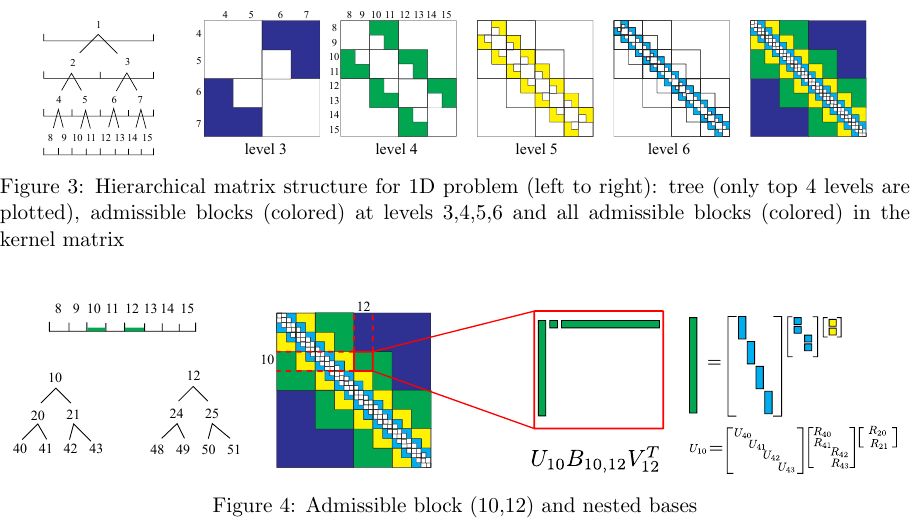
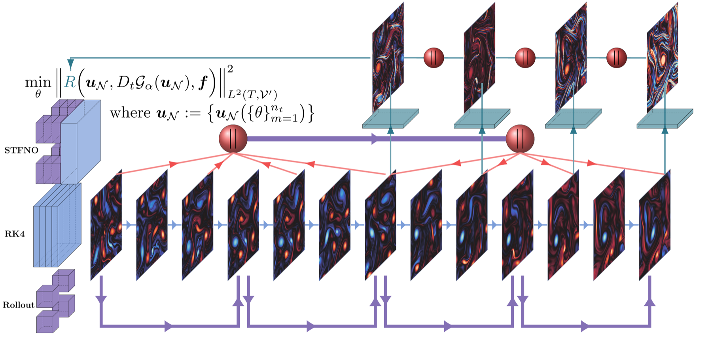

Data-Driven Numerical Linear Algebra and Scientific Machine Learning


We develop numerical methods that use information from data, simulations, and problem structure to build faster and more reliable computation. This includes both data-driven matrix algorithms and learning-assisted solvers, with an emphasis on methods that remain interpretable, stable, and useful inside large scientific workflows.
- Low-rank approximation, hierarchical compression, and data-guided matrix algorithms.
- Learning-assisted multigrid, graph-based preconditioners, neural operators, and surrogate solver components.
- Representative problem classes include sparse and kernel matrices, covariance operators, PDE discretizations, and large-scale operators from scientific computing.